May 12, 2026 | Media and Story by Elijah Tan | ~10 Minute Read
It looks like a monument. To what, I was about to find out shortly.
Ornate arches adorn its walls, which serve no obvious instrumental purpose. The walls are constructed from beige stone instead of the sleek, reflective metal that might be more commonly associated with observatories.
It allows the structure to blend in with the surrounding nature -- grass swaying carefreely in the breeze, accompanied by the faint sounds of the gentle waves of Williams Bay, Wisconsin. If this is a place of science, it is far more than a sterile laboratory.
Also, that's a big dome. We'll get to that soon.
As I hopped off the bus with my friends from the Ryerson Astronomical Society, we were greeted by an impressive facade and our tour guides for the day.
The engraved words and numbers on the entrance's facade reminded us of our connection to this historic building.
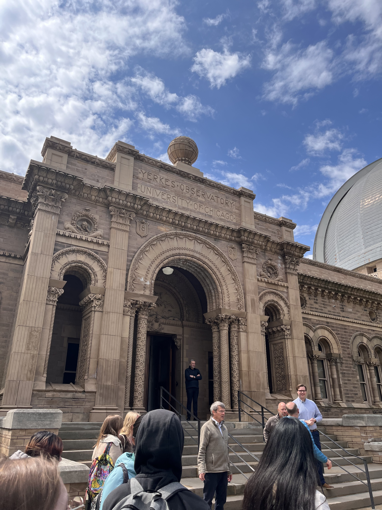
The entrance of Yerkes Observatory.
The Yerkes Observatory had been founded as an institution of the University of Chicago in 1895. We were there as undergraduates of that same University, more than 130 years later. Many of us present were studying Astrophysics.
The utterance "This is so cool!" was echoed many times that day, usually paired with a dropped jaw and the wild flailing of hands.
Our tour, however, did not commence with a heartfelt treatise of astronomers' love for the stars. It began with economics.
Observatories take money to build. Fundraising played as critical of a role in fuelling science back then as it does today. The observatory's founding astronomer, George Ellery Hale, was looking for a benefactor in the early 1890s.
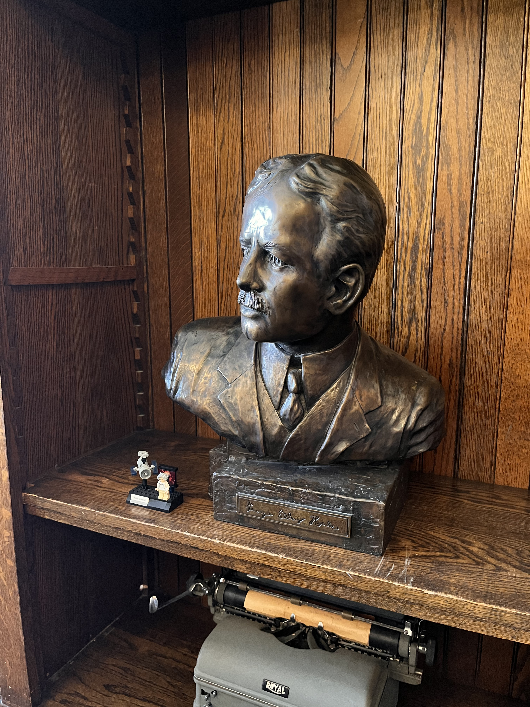
A bust of George Ellery Hale.
He found his donor in Charles Yerkes, the "most hated man in Chicago." Yerkes had become deeply unpopular for ruthlessly building railways that cut through Chicago neighborhoods and displaced households.
Yerkes, seeking to rehabilitate his image, decided that the Observatory would be a good investment. Yerkes contributed $800,000 to the observatory, worth about $30 million today.
The observatory's location in Williams Bay is a legacy of Yerkes' determination to make sure his rich peers would notice his contribution. Many of the wealthiest folks in Chicago often vacationed in Williams Bay, and would certainly notice the looming dome from their residences.
The charm offensive did not succeed on the observatory's architect, Henry Ives Cobb. Cobb's designs do not feature Yerkes particularly flatteringly.
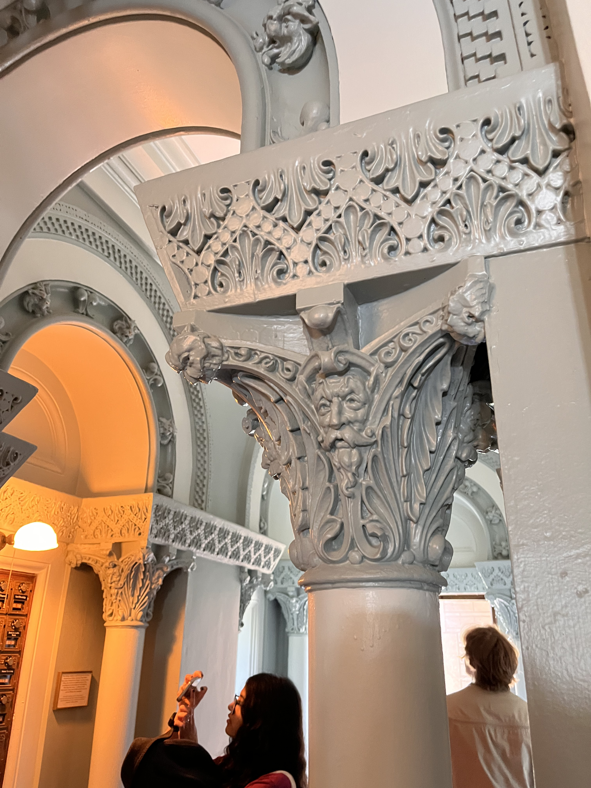
Yerkes, with a displeased frown.
Charles Yerkes's face appears no less than 256 times on the walls and pillars of the building. On some pillars not depicted here, Yerkes is depicted with devil horns.
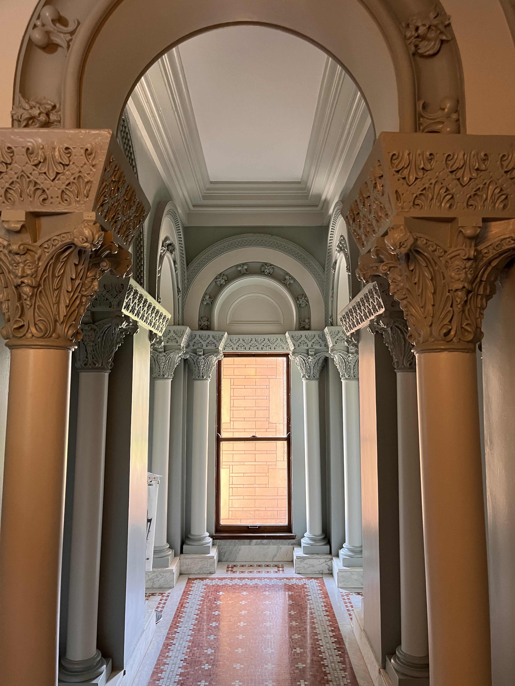
A quiet alcove. More Yerkes imagery stares down from above.
The history of science, like all histories, resists simple narratives. It is difficult to ascertain whether I ought to reflect on Charles Yerkes's name with gratitude or disdain.
The year before our visit, billions of dollars of federal grants for science had been cut. In times like these, does science need all the allies it can get, even if their histories might be morally dubious?
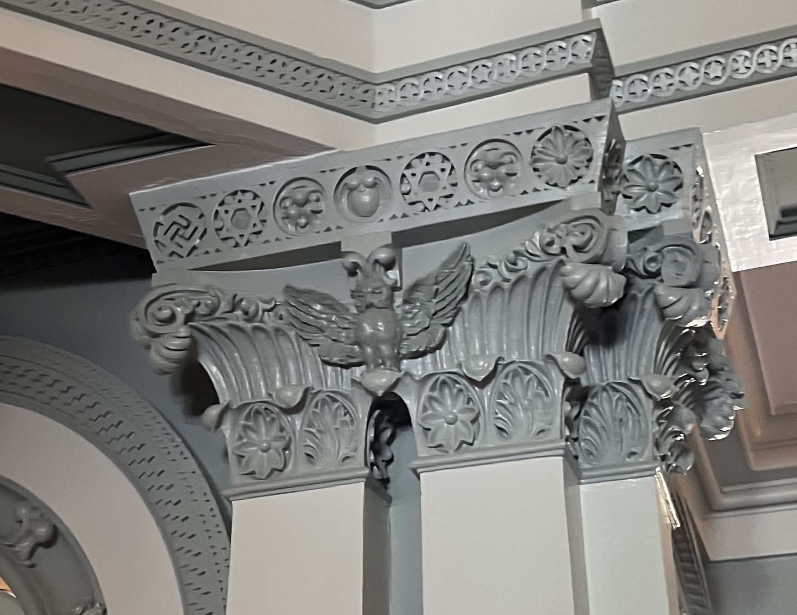
An owl engraving.
Cobb decided that owls would be the symbols of the astronomers at Yerkes Observatory, because he knew that many of their intensive activities would be taking place at night.
Many of these astronomers were graduate students pursuing their doctorate degrees in Astronomy or Astrophysics at the University of Chicago. They lived on-location at Yerkes Observatory.
To facilitate their schedule, Cobb did more than decorate the walls with a bird that understood their struggle. He designed their living quarters, which were in the attic, with small, circular windows that would prevent too much light from entering during the day, when the students might be trying to catch up on sleep.
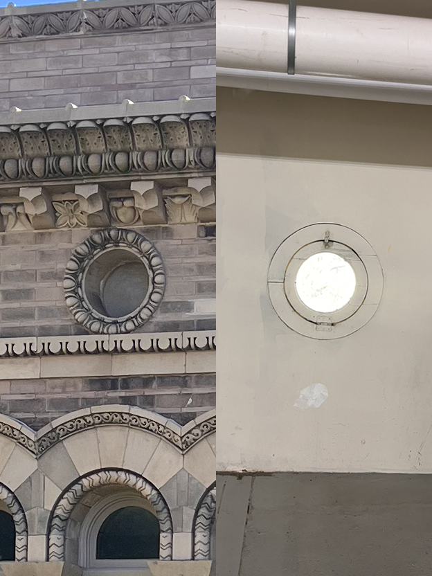
The small windows to the attic, from the outside and from the inside.
The attic was thus known as The Battleship, due to the windows' striking similarity to a ship's portholes.
They took classes in classrooms within the observatory, and borrowed textbooks from a library right on-site.
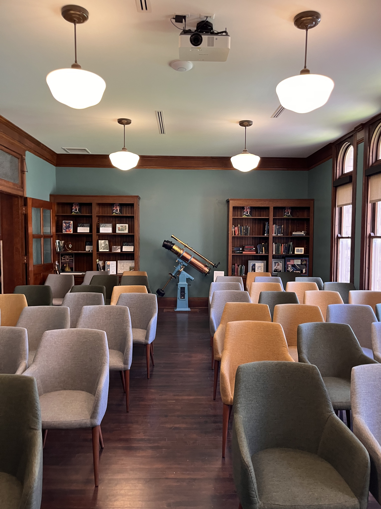
A classroom.
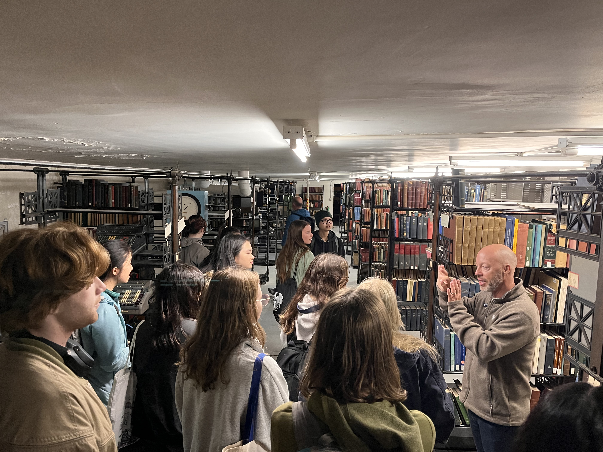
The old library.
Since the library had no electronic check-out stations, students kept track of a book's circulating ownership by signing their names and the date inside of it.
Inside of a copy Bruno Rossi's textbook on High Energy Particles is the signature of one Carl Sagan, who pursued his doctorate at Yerkes Observatory. An entire generation of the American public would grow up hearing him speak about the universe on the show "Cosmos".
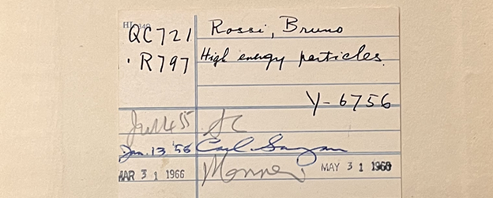
Carl Sagan's signature.
A key activity that some graduate students might have been occupied with was the development of photographic glass plates. Photographic technology at the turn of the 20th century had just made it possible to capture and record images taken by telescopes.
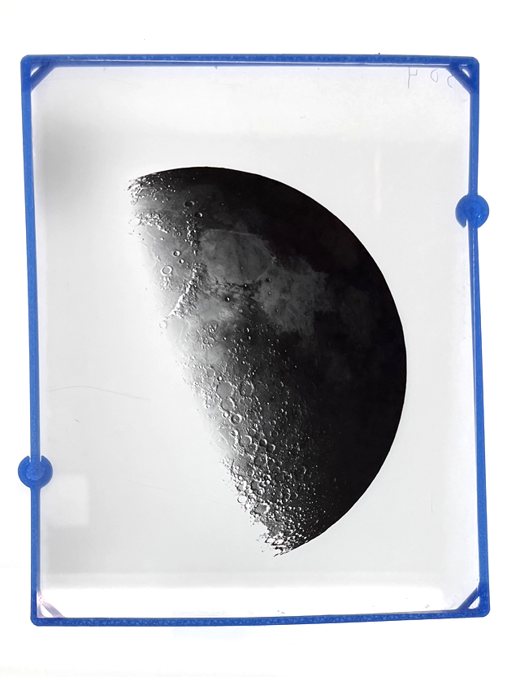
A back-lit photographic glass plate of the Moon.
It would have required impressive spatial awareness, since developing the glass plates was a task done in complete darkness. Not even red light was permitted, as it might have been in studios developing black and white photographic paper, because the glass plates were still sensitive to it.
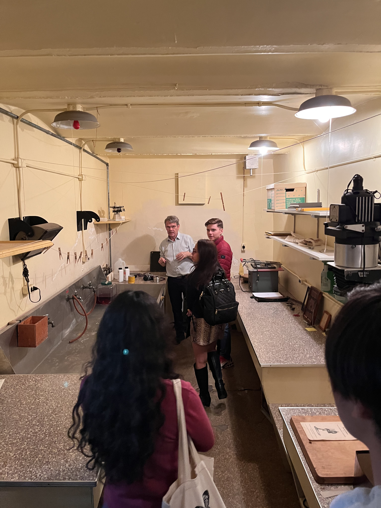
The dark room in the basement of Yerkes Observatory.
A long corridor on the first floor connects the classrooms, the path to the library, and the entrance to the basement. At the corridor's end is a tall staircase about eight feet wide.
It leads to the largest dome of Yerkes Observatory.
The staircase climbs high enough that it appears to lead to the third floor of the building. From the bottom of the staircase, you can just about make out a structure that's blue in color. But it's too tall, and gets cut off by the top of the doorframe.
As you ascend the staircase, more of it comes into view. Until you cross the threshold, and you become face to face with the largest refracting telescope in the world.
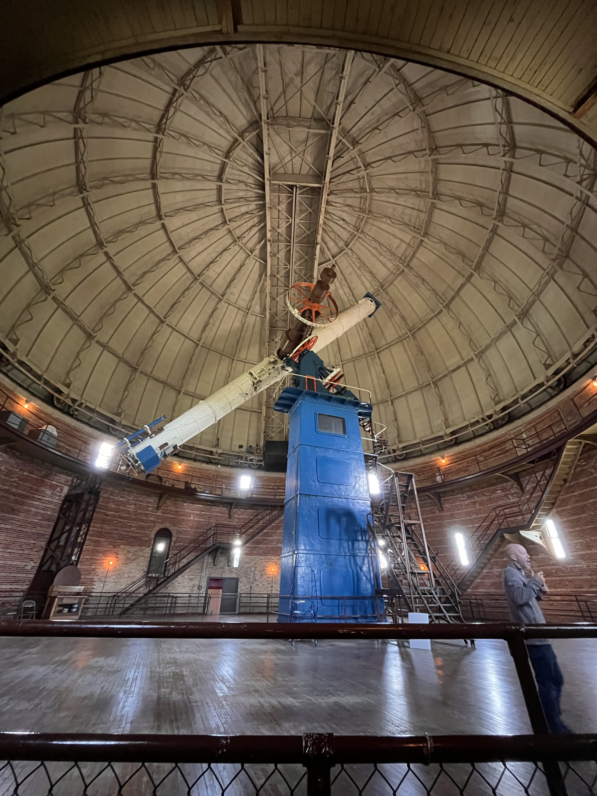
The structure holding up the telescope was not originally blue. It was once brown, but it had been repainted in the 1960s after a slate of astronomers from Yerkes had been handpicked to lead positions at NASA. One of them was Nancy Roman, NASA's first Chief of Astronomy.
The spiral staircase by its right side provides access to the motors that control the angle and rotation of the telescope.
It would not, however, be where the astronomers looked through the telescope or collected light for their photographic glass plates. That was done on the other end of the telescope, closer to the ground.
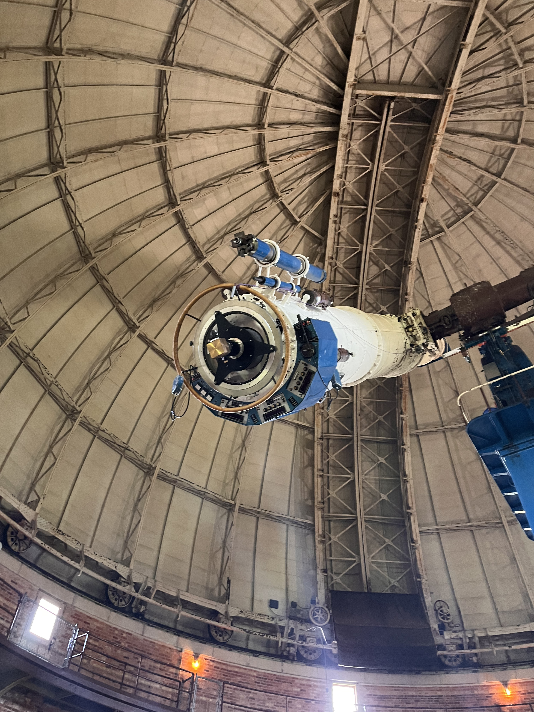
This end of the telescope also has a wheel, which could be grabbed onto for a single person to rotate the telescope manually. So perfectly counter-balanced was the 12,000 pound telescope that this was possible.
But the eyepiece is unusually far off the ground, which could pose a problem for astronomers, most of whom are not twelve feet tall. A ladder could help make up the difference, but would it always be enough?
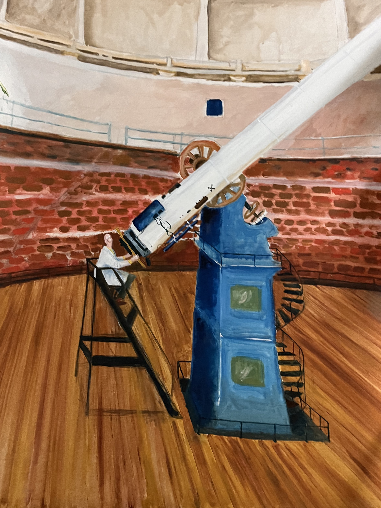
A painting of an astronomer, which I found lying around in the Observatory's basement.
Why not simply move the entire floor up and down?
The wooden floor is a massive elevator. Always has been, since the turn of the 20th century.
When astronomers would use the telescope to observe the night sky, they would crack open the dome to form a slit just large enough so that the Telescope could peek at the night sky, but small enough to protect the telescope from the elements.
What if the celestial object of interest was misaligned with the slit?
Move the slit, of course. By rotating the entire dome.
Imagine working all night, sheltered by an awe-inspiring dome under an even more massive night sky, with the ambient quiet occasionally punctuated by the whirring echoes of heavy machinery.
It was a spectacle. But it was also wonderfully ordinary.
A challenge that modern science faces is its elusiveness to non-experts. Stereotypes abound of scientists possessing some kind of alien genius. Specializations have gotten so deep, knowledge so precise, that a non-specialist often has a hard time making sense of the equipment they see in a state-of-the-art research laboratory. It may as well be another planet.
Not this place. The machinery is impressive but not opaque. The heart of the dome-sized elevator is a humble motor, and one can watch the counterweights that enable the floor to ascend and descend. The metallic wheels that facilitate the dome's rotation are also plain to see.
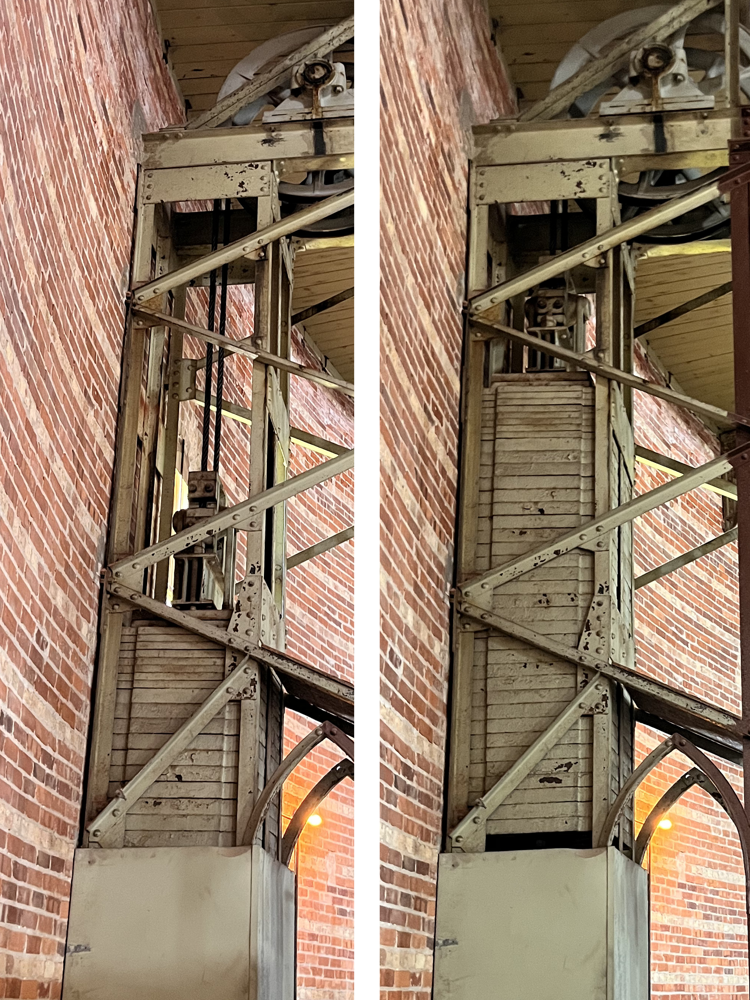
The counterweights ascend so that the floor may descend.
Nothing is hidden behind a curtain of "expert knowledge", and instead the determination of ordinary people to solve problems any curious person can grasp shines through.
Eyepiece too high? We're going to elevate the whole floor.
Dome opening misaligned? Put the dome on wheels and give it a spin.
Ice and snow preventing us from cracking open the dome? Put your boots on, grab your coat, we're climbing onto the roof to kick it off so that we can observe. Don't you know how few clear nights we get a year in the Midwest?
At least, that was what astronomer E.E. Barnard was known for doing when he was professor of astronomy at UChicago. He has a star named after him -- Barnard's Star, which is the fastest-moving star across the night sky. In 175 years, it will have moved about the width of a full moon.
Within these walls, astronomy superstars like Edwin Hubble became a little more tangible. Today, his name adorns a beloved space telescope, and he is credited with proving that other galaxies outside of the Milky Way exist.
But there was a time where he was the person who was great at keeping a telescope pointed on target. As a graduate student, he gained a reputation for being able to manually maintain the telescope's alignment with a celestial object of interest, as it moved in an arc across the sky. And that feels much more down to earth to me.
This is the gift that Yerkes Observatory keeps on giving. It is a place where giants of astrophysics were cultivated and molded. But it also testifies to the kind of people they were.
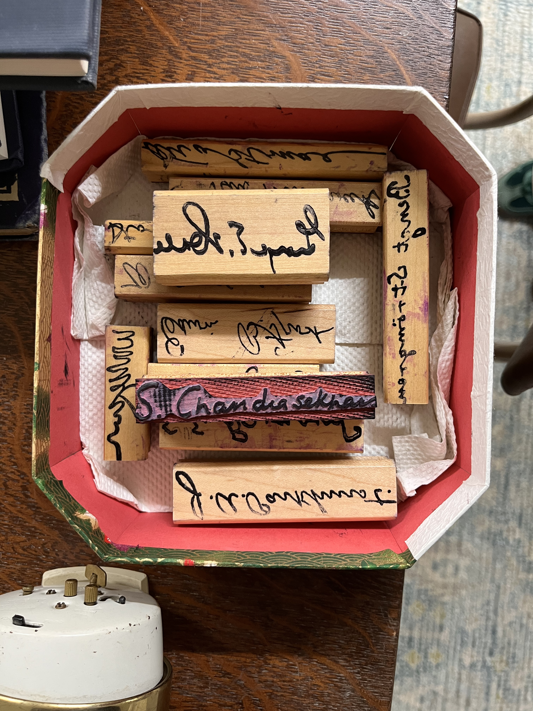
Subramanyam Chandrasekhar's stamp, from when he studied at Yerkes. He went on to win the Nobel Prize in Physics for proving that stars could collapse into black holes.
Every huge name who walked these halls was just a curious person who wanted answers from the universe, and wouldn't take no for an answer.
And in that do I, a second-year undergraduate, dare to see my reflection.